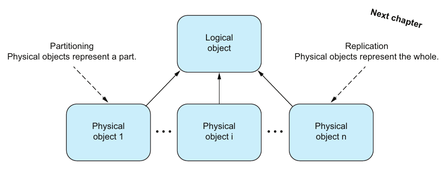
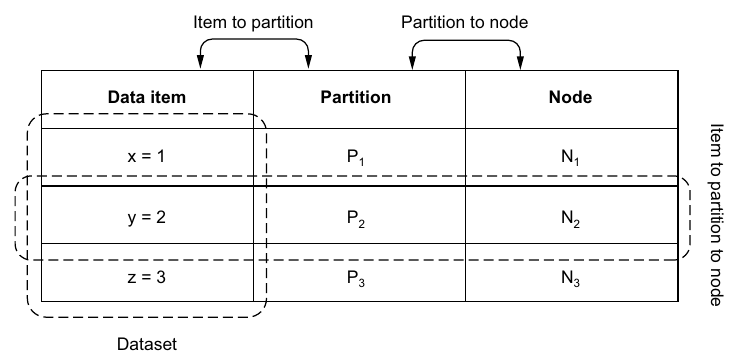
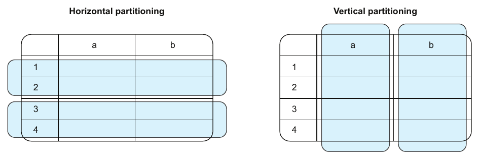
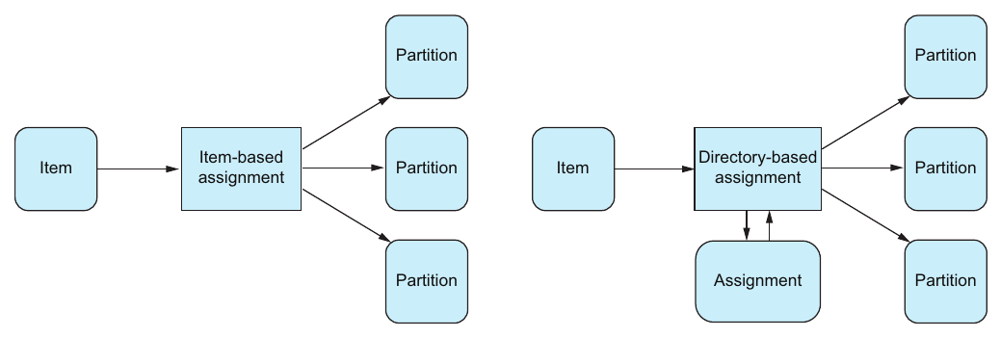
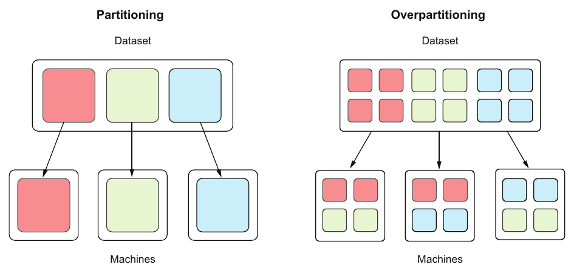

فصل ۷ · صص. ۹۰–۱۰۵
پارتیشنبندی
Partitioning
Think Distributed Systems, 1st Edition
پارتیشنبندی و replication دو تکنیک ضروری مقیاسپذیری و قابلیت اطمیناناند. پارتیشنبندی از سقف مقیاسپذیری یک مؤلفهی تنها رد میشود؛ و replication در فصل ۸ از سقف قابلیت اطمینانش (ص. ۹۰). فصل از دانشنامهای شروع میکند که الفبایی به جلد شکسته شده، و همین از قبل توزیع ناهموار و تقاضای ناهموار و ارجاع متقابل را نشان میدهد (صص. ۹۰–۹۱). بعد پارتیشنبندی را اینطور تعریف میکند: یک object منطقی که چند object فیزیکی مجزا نمایشش میدهند (ص. ۹۲).
پارتیشنبندی، یعنی قلم به پارتیشن، را از متوازن کردن، یعنی پارتیشن به نود، جدا میکند (صص. ۹۳–۹۴). پارتیشنبندی را ایستا یا پویا، یعنی شمار ثابت یا متغیر پارتیشن، و افقی یا عمودی، یعنی ردیف یا ستون، ردهبندی میکند (صص. ۹۴–۹۷). تخصیص قلممحور، یعنی stateless و دانهدرشت، را با تخصیص دایرکتوریمحور، یعنی stateful و دانهریز، مقایسه میکند (صص. ۹۷–۹۹). بعد نویسنده آزمایشی اجرا میکند: ۲۳۵۹۷۶ کلمهی دیکشنری که به پنج پارتیشن تخصیص داده میشوند. پارتیشنبندی بازهای نامتوازن است، پارتیشنبندی hash هموار، و هر دو سر رفتن از پنج به شش پارتیشن بیشتر قلمها را جابهجا میکنند. consistent hashing فقط حدود n/m را جابهجا میکند (صص. ۹۹–۱۰۳). فصل با over-partitioning تمام میشود، که تا جایی انعطاف متوازن کردن میدهد (صص. ۱۰۳–۱۰۴).
فهرست خود فصل (از فهرست مطالب کتاب)
- ۷.۱ دانشنامهها و جلدها — ص. ۹۰
- ۷.۲ فکر کردن در پارتیشنها — ص. ۹۲
- ۷.۳ مکانیک پارتیشنبندی و متوازن کردن — ص. ۹۳
- ۷.۴ پارتیشنبندی و پارتیشنبندی دوباره — ص. ۹۴
- ۷.۴.۱ گونههای پارتیشنبندی — ص. ۹۴
- ۷.۴.۲ راهبردهای تخصیص قلم داده به پارتیشن — ص. ۹۷
- ۷.۵ راهبردهای رایج تخصیص قلممحور — ص. ۹۹
- ۷.۵.۱ پارتیشنبندی بازهای — ص. ۱۰۰
- ۷.۵.۲ پارتیشنبندی hash — ص. ۱۰۰
- ۷.۶ پارتیشنبندی دوباره — ص. ۱۰۱
- ۷.۶.۱ پارتیشنبندی بازهای — ص. ۱۰۱
- ۷.۶.۲ پارتیشنبندی hash — ص. ۱۰۲
- ۷.۷ consistent hashing — ص. ۱۰۳
- ۷.۸ متوازن کردن و over-partitioning — ص. ۱۰۳
از کتاب
۷.۱ دانشنامهها و جلدها
دانشنامهی نوجوانی نویسنده به جلدها شکسته شده بود، یکی برای هر حرف (شکل ۷.۱). دانشنامه object منطقی است و جلدها objectهای فیزیکیاند که زیرمجموعههای مجزا را نگه میدارند (صص. ۹۰–۹۱). جای دادن تصادفی، جستوجو را به پیمایش کامل تبدیل میکرد، پس producer و consumer روی قاعدهای توافق میکنند: هر entry به جلد حرف اولش میرود و از همانجا گرفته میشود (ص. ۹۱).
| چالش | دانشنامه | سیستم نرمافزاری (ص. ۹۱) |
|---|---|---|
| توزیع ناهموار | جلد E کلفت است و جلد X نازک | بعضی پارتیشنها قلمهای خیلی بیشتری دارند |
| تقاضای ناهموار | بیشتر از X سراغ E میروید | پارتیشنهای داغ |
| ارجاع متقابل | پارتیشنبندی زیر P به replication زیر R ارجاع میدهد: دو جلد | عملیاتی که از پارتیشنها رد میشوند |
از کتاب
۷.۲ فکر کردن در پارتیشنها


پارتیشنها بین مؤلفههایی پخش میشوند که نود نامیده میشوند، که تقاضا را پخش میکند و از سقف یک نود میپرهیزد (ص. ۹۲).
دو لحظهی آها! (صص. ۹۲–۹۳):
- یک سیستم توزیعشده ذاتاً پارتیشنبندیشده است. هر مؤلفه با حالت محلی انحصاریاش خودش یک پارتیشن است. پارتیشنبندی فقط دربارهی حجم داده، که خاصیتی ذاتی است، نیست، بلکه دربارهی سقف هر منبع تنهاست، مثل حجم درخواست که خاصیتی بیرونی است.
- مفهوم big data نسبی است. عملی، «هر چیزی که روی یک نود جا نمیشود». اگر یک نود یک register تک کلیدمقدار باشد، دو زوج big data است. یک Raspberry Pi و یک MacBook Pro آستانههای مختلفی دارند.
از کتاب
۷.۳ مکانیک پارتیشنبندی و متوازن کردن
بقیهی فصل یک ذخیرهسازی key-value را به کار میبرد (صص. ۹۳–۹۴):
- در شکل ۷.۳، مجموعهدادهی {x=1, y=2, z=3} به سه پارتیشن با یک زوج در هر کدام شکسته میشود، و هر پارتیشن روی سه نود تکرار میشود.
- دو رابطه مهماند (شکل ۷.۴): قلم به پارتیشن و پارتیشن به نود.


نمونههایی از بدهبستانهای وابسته به بار (ص. ۹۴):
| برنامه | پارتیشنبندی بر حسب… | خوب | بد |
|---|---|---|---|
| شبکهی اجتماعی X | کاربر | برای کاربر متوسط متوازن است | برای سلبریتیها و اثرگذارها نامتوازن |
| حسگرهای IoT | تاریخ | هر روزی همان مقدار داده را دارد | همهی نوشتنها به یک پارتیشن میروند |
جایگزینها شامل نوع حسگر و نوع اندازهگیری و منطقهاند. نیازمندیها عوض میشوند، پس راهبرد باید سازگار شود، و اغلب با جابهجا کردن داده بین پارتیشنها در حالی که باز هم به درخواستها سرویس میدهد (ص. ۹۴).
از کتاب
۷.۴ پارتیشنبندی و پارتیشنبندی دوباره
پارتیشنبندی قلمهای داده را به پارتیشنها تخصیص میدهد؛ و پارتیشنبندی دوباره دوباره تخصیصشان میدهد، مثلاً وقتی شمار پارتیشنها عوض میشود (شکل ۷.۵) (ص. ۹۴).
۷.۴ پارتیشنبندی و پارتیشنبندی دوباره
۷.۴.۱ گونههای پارتیشنبندی
صص. ۹۴–۹۷ایستا در برابر پویا فقط به شمار پارتیشنها میپردازد و نه شمار نودها (جدول ۷.۱) (ص. ۹۵):
| ایستا | پویا | |
|---|---|---|
| شمار پارتیشنها | ثابت؛ عوض کردنش عملیاتی آفلاین و مدیریتی است | متغیر؛ عوض کردنش عملیاتی عادی و آنلاین است |
| کشسان | ✗ | ✓ |
| پیچیدگی | کم | زیاد |
لحظهی آها!: ایستا تغییر کند یا کمتکرار را هم میپوشاند. اگر عوض کردن شمار پارتیشنها بهجای عملیات عادی کاری مدیریتی باشد، با مهاجرتهای برنامهریزیشده و برگشت و احتمال از دسترس خارج شدن، آنوقت ایستاست (ص. ۹۵).
افقی در برابر عمودی را با جدولهای رابطهای راحتتر میشود دید (شکل ۷.۶) (صص. ۹۵–۹۶):


| گونه | بر حسب چه میشکند | همچنین نامیده میشود |
|---|---|---|
| افقی | ردیف: مثلاً ردیفهای ۱ و ۲ در یک پارتیشن و ۳ و ۴ در دیگری | sharding |
| عمودی | ستون: مثلاً ستون a و ستون b | — |
میتوانید ترکیبشان کنید (شکل ۷.۷) (صص. ۹۶–۹۷):
- دادهی کاربر را عمودی بر حسب نوع بشکنید: دادهی متنی profile در یک دیتابیس رابطهای و عکس profile در یک ذخیرهسازی فایل.
- هر بخش را افقی بین چند دیتابیس یا چند ذخیرهسازی فایل بشکنید.
آنوقت هر جنبه مستقل مقیاس میگیرد.
۷.۴ پارتیشنبندی و پارتیشنبندی دوباره
۷.۴.۲ راهبردهای تخصیص قلم داده به پارتیشن
صص. ۹۷–۹۹برازندگی یک راهبرد تخصیص با دو چیز سنجیده میشود (ص. ۹۷):
- واریانس: قلمها چقدر یکنواخت بین پارتیشنها پخش میشوند.
- جابهجایی: وقتی شمار پارتیشنها عوض میشود چند قلم جابهجا میشوند.


| قلممحور (فهرست ۷.۱) | دایرکتوریمحور (فهرست ۷.۲) | |
|---|---|---|
| پارتیشن تابعی است از… | فقط خود قلم، یعنی کلیدش یا hash کلیدش، مثل key % 5 | قلم و یک دایرکتوری یا جدول جستوجو |
| حالت | stateless، توسعه و گرداندنش ساده | stateful، پیچیدهتر |
| کنترل | دانهدرشت: قلمها را متوازن میکند ولی نمیتواند قلم معینی را جایی بگذارد، پس دو قلم داغ میتوانند برخورد کنند | دانهریز: هر قلمی میتواند در هر پارتیشنی برود |
| خطر | برای برخورد قلمهای داغ راهحل سادهای نیست | دایرکتوری میتواند گلوگاه مقیاسپذیری و قابلیت اطمینان شود، که هدف را از بین میبرد |
(صص. ۹۷–۹۹)
PARTITION BY در ClickHouse پارتیشنبندی برای مدیریت است، نه برای توزیع: هر partition واحد حذف، جایگزینی و TTL است.
?نوبت شما · جدول Silver با PARTITION BY toDate(event_time) ساخته شده و ClickHouse خطای «too many parts» میدهد. چه چیزی را اشتباه گرفتهاید؟دیدن پاسخ
partition روزانه با چندسال داده یعنی هزاران partition و هر insert که چند روز را لمس کند چند part میسازد. partition ماهانه، یعنی toYYYYMM، معمولاً بس است؛ کلید پارتیشن باید با نحوهی رسیدن و حذف داده بخواند، نه با فیلتر کوئریها که کار ORDER BY است (صص. ۹۴–۹۹).
از کتاب
۷.۵ راهبردهای رایج تخصیص قلممحور
آزمایش (فهرست ۷.۳): هر کلمه در /usr/share/dict/words، یعنی ۲۳۵۹۷۶ کلمه روی ماشین نویسنده، را به پنج پارتیشن تخصیص بدهید. حالت آرمانی کمی زیر ۴۷۲۰۰ در هر پارتیشن است (ص. ۹۹).
| پارتیشن | بازه بر حسب حرف اول (فهرست ۷.۴: a–e و f–j و k–o و p–t و u–z) | عبارت hash(key) % 5 (فهرست ۷.۵) |
|---|---|---|
| ۰ | ۶۷۷۳۰ | ۴۷۲۱۹ |
| ۱ | ۳۳۲۰۳ | ۴۷۱۸۷ |
| ۲ | ۳۵۸۲۹ | ۴۷۳۶۲ |
| ۳ | ۷۳۴۳۲ | ۴۷۱۷۵ |
| ۴ | ۲۵۷۸۲ | ۴۷۰۳۳ |
پارتیشنبندی بازهای در پارتیشنهای ۰ و ۳ نقطهی داغ آشکار دارد؛ و hash کردن خوب متوازن است (صص. ۱۰۰–۱۰۱).
از کتاب
۷.۶ پارتیشنبندی دوباره
بعد، پنج پارتیشن را به شش عوض کنید و قلمهایی که میمانند و قلمهایی که جابهجا میشوند را بشمارید (فهرست ۷.۶) (ص. ۱۰۱). شمار پارتیشنها روی جایدهی قلممحور اثری بزرگ دارد:
| راهبرد | میمانند | جابهجا میشوند |
|---|---|---|
| بازه (فهرست ۷.۷: a–d و e–h و i–l و m–p و q–t و u–z) | ۱۱۴۷۹۰ که ۴۸٫۶٪ است | ۱۲۱۱۸۶ که ۵۱٫۴٪ است |
hash از % 5 به % 6 (فهرست ۷.۸) | ۳۹۴۴۳ که ۱۶٫۷٪ است | ۱۹۶۵۳۳ که ۸۳٫۳٪ است |
(صص. ۱۰۱–۱۰۲)
جدول ۷.۲ (ص. ۱۰۲):
| بازهی کلید | hash کردن | |
|---|---|---|
| کمینه واریانس | ✗ | ✓ |
| کمینه جابهجایی | ✗ | ✗ |
از کتاب
۷.۷ consistent hashing
روش consistent hashing هدفش هر دو است، یعنی کمینه واریانس و کمینه جابهجایی: با n قلم و m پارتیشن، بهطور میانگین فقط حدود n/m قلم جابهجا میشوند (ص. ۱۰۳). با بستهی uhashring در Python (فهرست ۷.۹)، نویسنده اینها را گرفت (ص. ۱۰۳):
- توزیعی برابر ۴۹۰۸۴ و ۴۷۷۵۳ و ۴۸۱۷۲ و ۴۷۱۴۴ و ۴۳۸۲۳ بین پنج پارتیشن؛
- و سر رفتن به شش، ۱۹۲۲۴۳ قلم که میمانند، یعنی ۸۱٫۵٪، و ۴۳۷۳۳ که جابهجا میشوند، یعنی ۱۸٫۵٪.
لحظهی آها!: نویسنده ترجیح میدهد به الگوریتمها با امضا و اثرشان و بالابهپایین فکر کند و نه با پیادهسازیشان. در سطح سیستم، آن چیزی که مهم است این است که consistent hashing چه میکند، نه چطور (ص. ۱۰۳).
امتحان کنید
پارتیشنبندی و متوازن کردن
باز کردن در صفحهی کامل ↗ · این شبیهسازی مدل خود vault از سازوکاری است که کتاب شرح میدهد.
از کتاب
۷.۸ متوازن کردن و over-partitioning
متوازن کردن پارتیشنها را به نودها تخصیص میدهد؛ و متوازن کردن دوباره دوباره تخصیصشان میدهد، مثلاً وقتی تقاضا عوض میشود (شکل ۷.۹) (صص. ۱۰۳–۱۰۴).
| چیدمان | انعطاف (شکل ۷.۱۰) (ص. ۱۰۴) |
|---|---|
| پارتیشن برابر نود، یکی برای هر کدام | ندارد: پارتیشنها و نودها یکبهیک قفلاند |
| over-partitioning، یعنی پارتیشن بیشتر از نود | وقتی تقاضا میافتد، نودها را از رده خارج کنید و پارتیشنهای یتیمشان را دوباره تخصیص بدهید. وقتی تقاضا بالا میرود، نود اضافه کنید و پارتیشنها را بینشان پخش |


محدودیت: شمار پارتیشنها سقف شمار نودهاست. همین که هر نود یک پارتیشن داشت، نود اضافه کردن کمکی نمیکند (ص. ۱۰۴).
Airflow pool و max_active_tasks دارد و Kubernetes podها را روی nodeها پخش میکند: همان مسئلهی متوازن کردن.
?نوبت شما · backfill یکساله با یک task برای هر روز ۳۶۵ task میسازد. چرا این بهتر از ۱۲ task ماهانه است، و چه چیزی را باید محدود کنید؟دیدن پاسخ
taskهای کوچکتر، مثل over-partitioning، را میشود متوازنتر پخش کرد و شکست یکی فقط یک روز را تکرار میکند. ولی pool را محدود کنید تا ۳۶۵ task همزمان به ClickHouse یا دیتابیس منبع هجوم نبرند (صص. ۱۰۳–۱۰۴).
مرور
بدهبستانها در یک نگاه
| راهبرد | واریانس | جابهجایی سر پنج به شش | حالت | کنترل |
|---|---|---|---|---|
| بازه بر حسب حرف اول | بالا: از ۲۵۷۸۲ تا ۷۳۴۳۲ در هر پارتیشن | ۵۱٫۴٪ | stateless | درشت |
| hash moduleی | پایین | ۸۳٫۳٪ | stateless | درشت |
| consistent hashing | پایین | ۱۸٫۵٪، با آرمان تقریبی یکششم | stateless | درشت |
| دایرکتوری | هر چه انتخاب کنید | هر چه انتخاب کنید | حالتدار؛ میتواند گلوگاه شود | ریز |
| شمار پارتیشن ایستا | — | فقط آفلاین | ساده | — |
| شمار پارتیشن پویا | — | آنلاین | پیچیده | — |
| over-partitioning | — | کل پارتیشنها را جابهجا میکند | ساده | سقفش شمار پارتیشن است |
مرور
نکتههای کلیدی
- پارتیشنبندی: یک object منطقی و چند object فیزیکی مجزا. روش replication: چند object فیزیکی که هر کدام کل را نمایش میدهند (ص. ۹۲).
- یک سیستم توزیعشده طبق تعریف پارتیشنبندیشده است. هر مؤلفه و حالت محلیاش یک پارتیشن است. پارتیشنبندی دربارهی رد شدن از سقف هر منبع تنهاست: حجم داده که خاصیتی ذاتی است، یا حجم درخواست که خاصیتی بیرونی (ص. ۹۲).
- مفهوم big data نسبی است: هر چیزی که روی یک نود جا نمیشود (صص. ۹۲–۹۳).
- پارتیشنبندی با متوازن کردن فرق دارد. پارتیشنبندی قلمها را به پارتیشنها تخصیص میدهد؛ و متوازن کردن پارتیشنها را به نودها (صص. ۹۳–۹۴، ۱۰۳).
- راهبرد درست به بار بستگی دارد. پارتیشنبندی X بر حسب کاربر به سمت سلبریتیها نامتوازن میشود؛ و پارتیشنبندی دادهی IoT بر حسب تاریخ همهی نوشتنها را به یک پارتیشن میفرستد. پارتیشنبندی کم یکباروتمام است (ص. ۹۴).
- ایستا در برابر پویا به شمار پارتیشنها برمیگردد. ایستا ساده است ولی کشسان نه؛ پویا کشسان است ولی پیچیده (ص. ۹۵).
- برازندگی تخصیص برابر واریانس بهعلاوهی جابهجایی است. hash کردن واریانس را کمینه میکند؛ و نه بازه و نه hash moduleی جابهجایی را کمینه نمیکنند (جدول ۷.۲). consistent hashing هر دو را میکند (صص. ۹۷، ۱۰۲–۱۰۳).
- مفهوم over-partitioning، یعنی پارتیشن بیشتر از نود، میگذارد با جابهجا کردن کل پارتیشنها نود اضافه یا کم کنید، ولی شمار پارتیشنها سقف شمار نودهاست (ص. ۱۰۴).
تمرین
خودتان را بسنجید
پرسشها و پاسخها مال vault است و از روی یادداشتهای بالا نوشته شده؛ پاسخها به صفحههای کتاب ارجاع میدهند.
۱پارتیشنبندی از نظر objectهای فیزیکی با replication چه تفاوتی دارد؟دیدن پاسخ
در پارتیشنبندی، هر object فیزیکی بخشی مجزا از object منطقی را نمایش میدهد. در replication، هر کدام کل را نمایش میدهد (ص. ۹۲).
۲تفاوت پارتیشنبندی و متوازن کردن چیست؟دیدن پاسخ
پارتیشنبندی قلمهای داده را به پارتیشنها تخصیص میدهد؛ و متوازن کردن پارتیشنها را به نودها (صص. ۹۳–۹۴، ۱۰۳).
۴چرا تخصیص دایرکتوریمحور میتواند هدف پارتیشنبندی را از بین ببرد؟دیدن پاسخ
دایرکتوری مؤلفهای stateful است که هر جستوجویی به آن وابسته است، پس میتواند گلوگاه مقیاسپذیری و قابلیت اطمینان شود (ص. ۹۹).
۵در آزمایش کتاب، کدام راهبرد کمترین واریانس را داشت، و کدام سر رفتن از پنج به شش پارتیشن بیشترین قلم را جابهجا کرد؟دیدن پاسخ
پارتیشنبندی hash کمترین واریانس را داشت، و بیشترین جابهجایی را هم: ۸۳٫۳٪، در برابر ۵۱٫۴٪ برای بازه (صص. ۱۰۰–۱۰۲).
۶روش consistent hashing چه قولی میدهد؟دیدن پاسخ
کمینه واریانس و کمینه جابهجایی: با m پارتیشن، فقط حدود n/m از n قلم جابهجا میشوند. نویسنده ۱۸٫۵٪ اندازه گرفت (ص. ۱۰۳).
۷چه چیزی over-partitioning را محدود میکند؟دیدن پاسخ
شمار پارتیشنها بیشینهی شمار نودها را تعیین میکند. همین که هر نودی یک پارتیشن داشت، نود اضافه کردن کمکی نمیکند (ص. ۱۰۴).
مکمل
فراتر از کتاب
مکمل vault، نه از متن کتاب.
- بازتولید آزمایش. تابع
hash()درونساخت Python روی یک رشته در هر process تصادفی است مگرPYTHONHASHSEEDگذاشته شود، پس شمارشهای دقیق کتاب از اجرا به اجرا فرق میکنند. فایل کلمههای شما هم فرق میکند. آزمایش راهبردهای تخصیص آزمایش را قطعی با یک hash پایدار و فهرست کلمهی ساختگی seedدار دوباره اجرا میکند، تا نسبتها، و نه شمارشهای دقیق، با کتاب مقایسهشدنی باشند. - چرا n/m؟ وقتی پارتیشن ششمی به حلقه میپیوندد، حدود یکششم فضای کلید را تحویل میگیرد، و فقط کلیدهای همان کمانها جابهجا میشوند: یکششم تقریباً ۱۶٫۷٪ است، نزدیک ۱۸٫۵٪ نویسنده. hash moduleی قلمی را فقط وقتی نگه میدارد که h module ۵ برابر h module ۶ باشد، که برای تقریباً یکششم مقدارهای hash برقرار است، و از همینجاست آن ۱۶٫۷٪ که میمانند.
- پارتیشن ثابت بهعلاوهی دایرکتوری. خیلی از سیستمها، مثل Elasticsearch و Riak و پارتیشنهای Kafka، ایدههای فصل را ترکیب میکنند: یک hash ایستا و بیشپارتیشنشده از کلید به پارتیشن، بهعلاوهی یک دایرکتوری کوچک برای پارتیشن به نود. آنوقت متوازن کردن دوباره کل پارتیشنها را جابهجا میکند. فصل ۷ کتاب DDIA این را با شکستن پویا مقایسه میکند؛ و فصل ۱۳ کتاب Database Internals آزمایش consistent hashing با نودهای مجازی دارد.
قدمهای بعدی
ادامه بدهید
اجرا کنید
بازه و hash و consistent hashing
هر راهبرد تخصیص قلمها را چقدر یکنواخت پخش میکند، و وقتی پنج پارتیشن شش میشوند چند تا جابهجا میشوند؟ این اسکریپت، که شکل آزمایش کتاب را پی میگیرد، دویست هزار کلمه را با بازهی حرف اول، یعنی همان گروههای حرفی کتاب، و با hash mod n و با حلقهی consistent hashing با صد نود مجازی برای هر پارتیشن تخصیص میدهد. شمارش هر پارتیشن و انحراف معیارشان را چاپ میکند، و بعد سهم کلمههایی که سر پنج به شش سر جایشان میمانند.
cd books/think-distributed-systems/lab/07-assignment-strategies
python3 assignment_strategies.pyپیوندها
- فصلهای مرتبط: فصل ۱: فکر کردن در سیستمهای توزیعشده که مؤلفههایی با حالت محلی انحصاری را دارد، فصل ۸: replication که نیمهی دیگر مقیاسپذیری و قابلیت اطمینان است، فصل ۶: تراکنش توزیعشده که آن چیزی را دارد که وقتی عملیاتی از پارتیشنها رد میشود لازم دارید، و فصل ۱۲: cloud و سرویسها که مقیاس دادن سرویسها را دارد.
- اجرا کنید: بازه و hash و consistent hashing؛ شکل فهرستهای ۷.۳ تا ۷.۹ را بازتولید میکند: شمارش هر پارتیشن برای جایدهی بازهای و hash، و سهم قلمهایی که وقتی پنج پارتیشن شش میشوند میمانند، از جمله یک حلقهی consistent hashing.